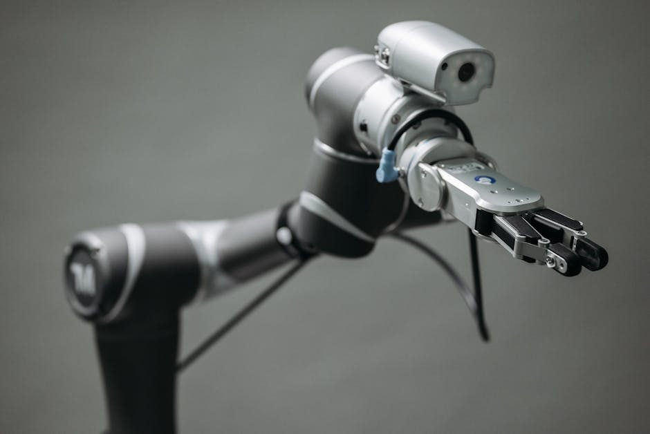

Imagine a world where robots aren't just powerful machines locked away in cages, but friendly, intelligent teammates working right beside us, making our jobs easier, safer, and even more fun! This isn't science fiction anymore; it's the exciting reality brought to us by Collaborative Robots, or "Cobots." These innovative machines are revolutionizing industries worldwide, and they're poised to transform the future of work right here in India. Get ready to dive into the fascinating world of cobots and discover how they're shaping a new era of human-robot collaboration!
What Exactly Are Cobots?
At its heart, a cobot is a robot designed to work *with* humans in a shared workspace, without the need for safety fencing. Unlike traditional industrial robots, which are typically large, fast, and require strict safety barriers to prevent accidents, cobots are built with safety as their top priority. They are engineered to sense their surroundings, react to human presence, and operate within defined power and force limits.
Think of it this way: a traditional industrial robot is like a powerful, specialized tool that does one job very quickly and precisely, but it needs its own dedicated space. A cobot, on the other hand, is like a helpful assistant that can adapt to different tasks and work directly alongside you, offering a helping hand (or gripper!) when needed.
Why Are Cobots So Special? The "Superpowers" of Collaboration
Cobots aren't just smaller robots; they possess unique characteristics that make them incredibly valuable and distinct:
Safety First!
This is the defining feature of cobots. They are equipped with advanced sensors, software, and sometimes even soft, rounded edges to ensure human safety. If a cobot detects a human in its workspace, it can automatically slow down, stop, or even reverse its movement to prevent collisions. This allows humans and robots to share a workspace confidently.
- Force Limiting: Cobots are designed to operate within strict force and power limits. If they encounter an unexpected resistance (like a human hand), they will stop before applying harmful force.
- Speed and Separation Monitoring: They can adjust their speed based on the proximity of a human worker, slowing down as a person gets closer.
- Hand Guiding: Many cobots can be physically guided by a human to teach them a path or position, making programming intuitive and safe.
Easy to "Teach"
One of the most exciting aspects of cobots, especially for young learners and educators, is how relatively easy they are to program and operate. Unlike complex industrial robots that often require specialized coding knowledge, many cobots can be "taught" new tasks through intuitive interfaces:
- Lead-Through Programming: You can physically move the robot arm to the desired positions, and it will record the sequence. It's like showing a friend how to do something!
- Graphical User Interfaces (GUIs): Many cobots come with user-friendly touchscreen interfaces where you can drag-and-drop commands or select options, making programming feel more like playing a video game than writing code.
- No-Code/Low-Code Solutions: This approach empowers people without deep programming skills to automate tasks, opening up robotics to a much wider audience.
Flexible and Adaptable
Cobots are incredibly versatile. They are often lightweight and compact, meaning they can be easily moved and re-deployed for different tasks in different parts of a factory or workshop. This flexibility is a game-changer for businesses that need to adapt quickly to changing production demands.
Boost Productivity & Quality
By taking over repetitive, strenuous, or dangerous tasks, cobots free up human workers to focus on more complex, creative, or value-added activities that require human dexterity, problem-solving, and critical thinking. This collaboration leads to higher overall productivity, improved product quality, and a better working environment.
"The future of work is not humans versus robots, but humans and robots working together. Cobots are the bridge to that collaborative future." - Industry Expert
Where Do Cobots Work Their Magic?
Cobots are finding their way into a surprising variety of industries and applications:
- Manufacturing and Assembly: Performing intricate assembly tasks, screwing, gluing, polishing, or quality inspection. They can work tirelessly on repetitive tasks while humans handle the more delicate or variable parts of the process.
- Packaging and Palletizing: Efficiently picking and placing items into boxes or stacking them onto pallets.
- Quality Control: Using vision systems to inspect products for defects, ensuring consistency and high standards.
- Logistics and Warehousing: Assisting with picking, sorting, and moving items within warehouses.
- Healthcare: In labs, they can handle repetitive sample processing. In hospitals, they might assist with dispensing medication or delivering supplies.
- Small and Medium-sized Enterprises (SMEs): Their affordability, ease of use, and flexibility make them perfect for smaller businesses in India that might not have the resources for large, traditional automation systems.
A Glimpse into Cobot Programming (Simplified Example)
While real cobot programming often involves graphical interfaces or specific vendor software, the underlying logic is similar to what you might learn in a basic coding class. Here’s a super simplified pseudo-code example for a cobot performing a basic pick-and-place operation with a safety check:
// Cobot Program: Simple Pick and Place with Safety
START_PROGRAM
// Define Home Position
SET_POSITION Home_Position (X=0, Y=0, Z=100, Orientation=Neutral)
// Define Pick Position
SET_POSITION Pick_Position (X=200, Y=150, Z=20, Orientation=PickAngle)
// Define Place Position
SET_POSITION Place_Position (X=400, Y=150, Z=50, Orientation=PlaceAngle)
LOOP FOREVER // Keep repeating the task
// Check for human presence before moving
IF HUMAN_DETECTED_IN_ZONE THEN
STOP_MOTION
DISPLAY_MESSAGE "Human Detected! Pausing operation."
WAIT_FOR_CLEARANCE // Wait until human leaves the safety zone
DISPLAY_MESSAGE "Zone Clear. Resuming operation."
END IF
// Move to Pick Position
MOVE_TO Pick_Position
OPEN_GRIPPER
DELAY 0.5_SECONDS // Allow gripper to fully open
// Move down to grasp item
MOVE_LINEAR (Z_OFFSET = -15) // Move 15mm down
CLOSE_GRIPPER
DELAY 0.5_SECONDS // Allow gripper to fully close
// Move up from Pick Position
MOVE_LINEAR (Z_OFFSET = 15) // Move 15mm up
// Move to Place Position
MOVE_TO Place_Position
OPEN_GRIPPER
DELAY 0.5_SECONDS // Allow gripper to fully open
// Move up from Place Position
MOVE_LINEAR (Z_OFFSET = 15) // Move 15mm up
END LOOP
END_PROGRAM
In this example, the cobot continuously performs a pick-and-place task. The crucial part is the `IF HUMAN_DETECTED_IN_ZONE THEN` block. This represents the cobot's safety features in action. Before executing any major movement, it checks its sensors. If a human is too close, it pauses and waits for the area to be clear, ensuring no accidents happen. This kind of logic, combined with real-time sensor data, is what makes cobots safe collaborators.
The Future is Collaborative: Cobots in India
India is a rapidly growing hub for manufacturing and technology, and the adoption of cobots is accelerating. Indian industries are recognizing the immense potential of collaborative automation to enhance efficiency, reduce costs, and improve working conditions. From automobile manufacturing to electronics assembly, cobots are empowering businesses to scale up and compete globally.
For students and young enthusiasts, this means exciting career opportunities in robotics, automation, and engineering. Understanding how cobots work, how to program them, and how they integrate into various processes will be invaluable skills in the coming decades. It's not just about building robots; it's about designing intelligent systems that work harmoniously with people.
Conclusion
Collaborative robots are more than just machines; they are a testament to human ingenuity, pushing the boundaries of what's possible when humans and technology work together. They offer a future where workplaces are safer, tasks are more efficient, and human potential is unleashed to focus on creativity and innovation.
From their inherent safety features and user-friendly programming to their incredible flexibility and diverse applications, cobots are truly transforming industries and creating new possibilities. They are making advanced automation accessible to everyone, from large factories to small workshops, and they are paving the way for a smarter, more collaborative world.
Ready to Explore the World of Robotics?
The world of cobots and robotics is vast and incredibly exciting! If you're fascinated by how robots work, how they can be programmed, and how they're changing our world, then you're in the right place. At MakerWorks, we believe in hands-on learning and empowering the next generation of innovators.
Join our workshops, explore our resources, and start building your own robotic projects. Who knows, you might be the one designing the next generation of collaborative robots that will shape the future! Dive in, experiment, and let your curiosity lead the way!